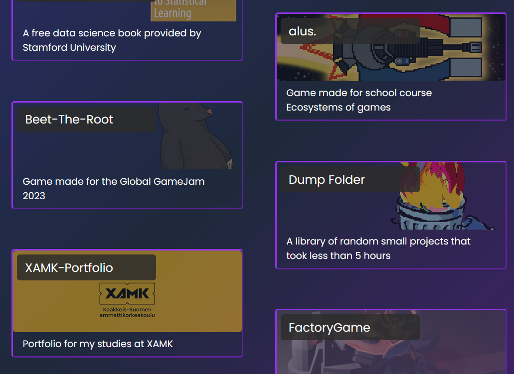

Personal Portfolio
Made with Astro JSAstro JS is a new JavaScript framework which whole stitch is the use or lack there of JavaScript. When I first dove into JavaScript, it was a whole lot of speghetti that I did not really like to work in. That is not to say that you cannot use JavaScript, in fact the framework allows the creators to add their favourite JS Frameworks into the project.
For more information visit the site here.
Note: Of course the framework does not support every single JS Framework but for the most part it does allow for the most used Frameworks to exist. Such as ReactJS, VueJS, Solid.JS and Svelte.
Astro JS also allows for support on Tailwind CSS for responsive web design but feel free to visit the full list of integratable add-ons here
Overall things to report
Stylistic choices:
- Poppins for the font
- The background is a gradient from a darker cyan colour to a darker purple and this colour scheme will be used for the rest of the pages as well
- Text colour is white
- The titles use a variation of purple and cyan
The layouts for the pages utilize a BaseLayout component that contains the footer, contacts and the navigation bar. The head tag for the page is also found in the BaseLayout component.
The pages themselves mostly consists from preview components that show cards with most of them containing a link to a page that renders a markdown file. The markdown file is then rendered into HTML and then displayed on the page.
Pages
Landing page
Image of the finished page:
About page
Image of the finished page:
Projects page
Image of the finished page:
Articles page
Image of the finished page:
Contact page
Image of the finished page:
Mobile view
Landing Page
Landing Page
Landing Page
Landing Page
Landing Page
Components
Contact Component
The contact component holds a link to my CV and a link to e-mail me. It is used on every page and is found in the BaseLayout.
Preview Components
The preview components are used to render the markdown files partially
to the about, projects and articles page. The page that renders the markdown
is in a [...slug].astro file and can be opened from the links
in the preview component cards. All the correcsponding preview pages have
their own slug pages.
Grid Component
The grid component is used within the preview pages and it has two variants; an offset and a regular grid. These can be seen in the different pages.
Navigation Components
The navbar is again found on every page in the portfolio. There exists a premade astro component navbar, but I find it better to just use my own. There is also a mobile navbar for mobile use.
Other Components
These components are so miniscule in the grand scheme of things that I did not want to write about them individually. These include:
- Footer
- Hero (title, subtitle, image and Search Engine Optimization (SEO) for the project pages)
- CV_Download button
Problems: pages
Landing page
While the landing page is simple, I had some trouble with it.
First of all the Typed.js part text does not change size via Tailwind CSS
but instead a <style> tag had to be used to adjust the sizing.
The Typed.js also uses a JavaScript code that determines my current grade
at XAMK and is automated to be working as the years go by.
Overall Tailwind is convenient for most of the styling but requires
the use of <style> tag for miniscule workarounds and
feels a lot simpler that the use of pure CSS or SCSS as I have been using
for the most part.
I decided to make some changes to the landing page. Over the next couple of hours I changed the outlook, the font and other things in my portfolio. This includes the change in font, background colour and the overall look of the page became much more appealing.
Projects page
For most of my examples and tutorials I used this StackBlitz page containing a pre-built astro portfolio. I did not directly use it for everything, but used it as an example of how make an astro portfolio.
The problems with the projects page are minimal. The only thing that I can think of is that the grid was a bit difficult to work with at first. Using the grid component and learning from how to make them in the future was a bit of a hassle. Using the afore mentioned StackBlitz page, I was able to create grid I used for all the pages.
The best thing that I learned from working in the projects page was the use of a
[...slug].astro-element that allows for the rendering of markdown files.
I based the rest of my other pages on this slug element.
About page
The about page follows a similar structure to the projects page. The problematic part begins when I wanted to create the about page in the same style as the projects page. I had never before workied with markdown files and had to learn how to render them into HTML correctly and in the intended way. Since some of the elements in the about page were not meant to be markdown files, I did not want them to be links to a markdown file.
To change this the about page has a conditional operator that checks if the markdown file has a link or not. The ones with a link direct to the rendered markdown file and the ones that do not have a link do not do anything. To separate the working life and educational lives, I simply just it so that the about page is split between school and work.
The about page was the first where I tried to use the slug element in a different way compared to the projects page and since I do not have that much experience in JavaScript, I spent a good chunck of time messing with it. Finally after a long time I was able to get it to work.
Articles page
As mentioned in the previous section, I have yet to write any articles. Moreover it currently works as a test page for when I inevidably return to edit the portfolio and add articles.
Problems: Components
Contact Component
The contact component is extremely simple in the sense that it really only holds a download link to my Cv and a mail link that auto-fills (hopefully) the senders receiver box with my e-mail. There really weren't any big problems. I just wasn't initially sure how often I would like for it to be present. I decided that it can be a part of every page and just simply implemented it to the baseLayout.
Preview Components
This is where the problems begin. The first part, when I created the projects page, wasn't that bad, since I utilized the StackBlitz page. The problems began when I wanted to create the about page and modify the data receival from the markdown files in a different folder.
The next part of the preview components was to work on the different types of files that I wanted to use
different markdown files for all different pages, but I had to make different folders for all since,
if I had them in the same folder, it would be rendered on every page. Next was the use of the
[...slug].astro-element. I had to copy and paste the slug element multiple times, as the
pages use a different data resource in the slug element.
Grid Component
The grid Component was mostly the only component that I copied line for line, for the most part. At first I had no idea on how the grid worked, since the grid would look different on every page. Then I just created the Grid component from scratch and modified the variants to fit my vision.
Grid Variant: simple
Grid Variant: Offset
Navigation Components
The biggest problem with the navigation bar was the implementation of the mobile navigation bar. The normal ways of transferring to a mobile view did not work as the navbars background was not responsive enough to the point that I fixed it by adding a st amount of pixels for the background from the top of the screen.
Other Components
Hero Component
The hero component is named similarly to how the first part of the page is named in other JS frameworks. It represents the top of the page and is the first thing that people read. In my case it also hold the Search-Engine Optimization (SEO) for my portfolio. This component didn't really pose any problems.
Footer Component
The bottom part of the page. It is also the last thing that people see. I made it as one of the first components as it was the easiest to implement into the page. The biggest problem with it was the transfer to a mobile view. As the footer is really wide, I decided to make the footer divide into two parts that are on top of each other in the mobile view. Other than that it did not pose any problems.
Conclusion
The project was a good introduction to Astro JS. I feel the project will help me get more accustomed to other front-end JS frameworks. Since I have an interest in working on full-stack development in the future, I feel that this project was a good start.
The project was sufficiently difficult and I feel that I learned a lot from it. Of course things did not go perfectly so, in the future I will plan my websites better and take more time just understanding JavaScript as a coding language, even if I don't like the language.